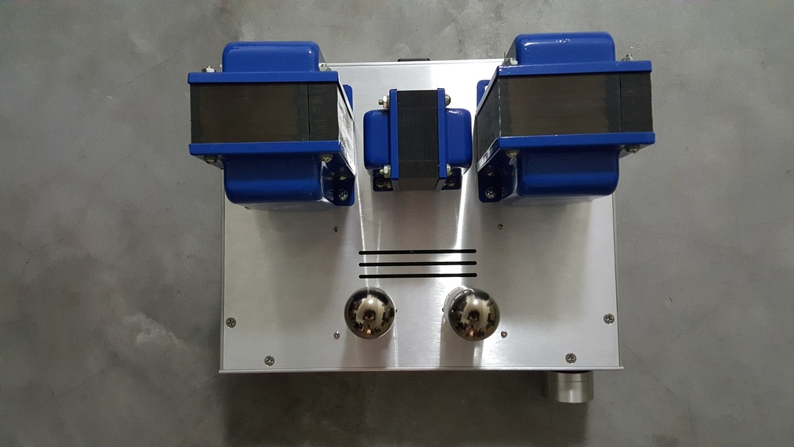

Kenny Shen
Novar Spud tube amplifier
A custom tube amplifier based on Neurochrome's Novar Spud. I opt to go with 6LR8 tubes set to triode mode, which delivers the lowest THD and more than enough watts for the Betsy speakers.
After an afternoon teaching myself CAD, I submitted the chassis design to the wonderful folks at Landfall Systems who did the machining.

